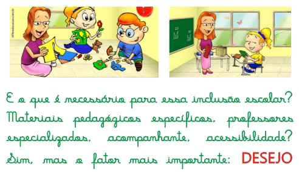
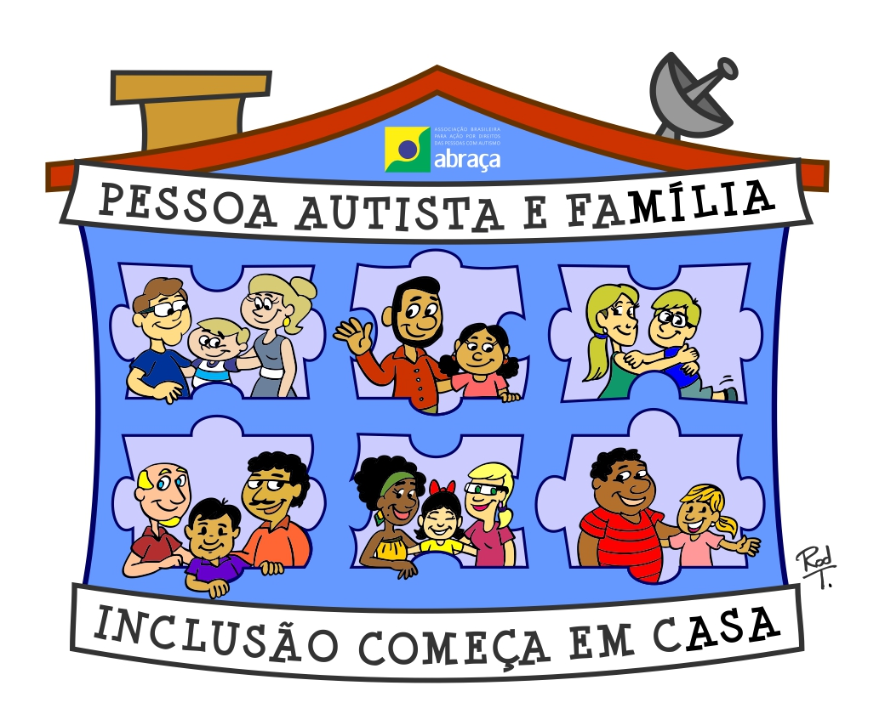

A inclusão começa com a chegada desse aluno à escola, mas é preciso também garantir sua permanência e aprendizagem.As instituições não podem negar a matrícula de alunos autistas nem exigir qualquer tipo de laudo médico. O cenário educacional brasileiro atual tem como mote principal o acesso, permanência e sucesso de toda criança na escola regular,a situação se concretiza como desafio, posto que a escola atual não é feita para todos.Até agora, os sistemas de ensino têm lidado com a questão por meio de medidas facilitadoras, como cuidadores, professoras de reforço e salas de aceleração, que não resolvem, muito menos atendem o desafio da inclusão. Pois qualificar uma escola para receber todas as crianças implica medidas de outra natureza, que visam reestruturar o ensino e suas práticas usuais e excludentes. Na inclusão, não é a criança que se adapta à escola, mas a escola que para recebê-la deve se transformar. Como muitas vezes as equipes gestoras não estão preparadas para desenvolver um plano pedagógico com as crianças autistas, é comum que elas sejam acompanhadas por um orientador terapêutico o que, na visão da coordenadora da ONG Autismo e Realidade, Joana Portolese, é um erro.Por isso, mais do que a aprendizagem em si, é preciso se ater à qualidade de ensino oferecida. “É necessário um plano de ensino que respeite a capacidade de cada aluno e que proponha atividades diversificadas para todos e considere o conhecimento que cada aluno traz para a escola.No caso do autista, o que está em jogo são as habilidades. “É nelas que se deve investir” para, assim, desenvolver as inabilidades, afirma Joana Portolese. Isso reafirma a necessidade de não se esperar um comportamento dado, ao que a maioria dos indivíduos do espectro autista não corresponde. 
Exemplo disso é o estudante André, que pode demonstrar suas habilidades. Enquanto as crianças realizam anotações comuns, ele faz fluxogramas sobre o conteúdo escolar, o que vem sendo utilizado por seus colegas, que tiram fotocópia do material para estudar para provas. ter síndrome de Aspenger não define quem é o estudante como pessoa, já que o estudante é muito mais do que essa síndrome.O respeito foi construído em inúmeros outros episódios, como quando André decidiu realizar uma atividade debaixo da carteira escolar. Em vez de puni-lo, a educadora resolveu socializar para toda a turma o modo diferente como o aluno aprendia e, nesse dia, todos os alunos estudaram debaixo da mesa. Para Janine(mãe de André), que vive a escola de perto com o filho, é preciso sempre explorar a variedade, interpretando o novo como positivo.A criança autista deve ocupar e fazer uso dos espaços públicos, assim como todos os cidadãos”, afirma a educadora. Para ela, o processo de desenvolvimento desse indivíduo será alavancado todas as vezes que ele estiver em situações legítimas de convívio”, avalia. Para além da relação professor aluno, as estratégias inclusivas devem acionar a comunidade escolar e os familiares dos estudantes.É importante garantir momentos para que todos discutam a questão e possam pensar de forma conjunta ações concretas para que a inclusão aconteça. 